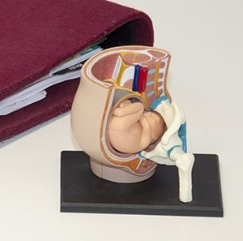

Neues Leben ins Leben begleiten.
Herzlich willkommen! Fachlich fundiert, ganzheitlich und mit viel Zeit begleite ich dich durch Schwangerschaft, Geburt und Wochenbett – in deinem Tempo und nach deinen Vorstellungen.

- Hebamme mit Kassenvertrag
- Ausbildung Semmelweis-Frauenklinik Wien
- Über 20 Jahre Berufserfahrung
- Hausbesuche im Wochenbett
Ein Stück des Weges gemeinsam gehen
Schwangerschaft
Mutter-Kind-Pass-Beratung, Vorsorge mit Harn- und Blutdruckkontrolle und Lagekontrolle, APM bei Beschwerden, Moxen bei Steißlage und Geburtsvorbereitung – im Kurs oder in Einzelsprechstunden.
Zu den AngebotenGeburt
Geburtsbegleitung in das Krankenhaus – mit „deiner“ Hebamme, die du selbst ausgesucht hast. Selbstbewusst, selbstbestimmt und aus eigener Kraft.
GeburtsbegleitungWochenbett
Nachbetreuung daheim, Stillberatung, Narbenentstörung und Lasertherapie – für ein ruhiges, sicheres Ankommen als Familie.
Nachsorge
Mutter-Kind-Pass-Beratung
Jede Frau hat im Rahmen des Mutter-Kind-Passes Anspruch auf ein einstündiges Gratisgespräch mit einer Hebamme. Wir sprechen über Schwangerschaftsverlauf, Geburt, Wochenbett und Stillen, Geburtsformen, Ernährung und Bewegung sowie dein psychosoziales Umfeld.
Ich rechne direkt mit der Krankenkasse ab – für dich entstehen keine Kosten.
Leistungen & Methoden
Klassische Hebammenarbeit, ergänzt durch Methoden aus Zusatzausbildungen – über viele Jahre in der Praxis verfeinert.
- 01
Mutter-Kind-Pass-Beratung
Kostenloses, einstündiges Hebammengespräch zwischen der 18. und 22. Schwangerschaftswoche.
- 02
Schwangerenvorsorge
Zeit für deine Fragen – mit Kontrolle von Gewicht, Harn, Blutdruck, Herztönen und Kindslage.
- 03
Geburtsvorbereitungskurs
Im Team mit erfahrenen Kolleginnen und Kollegen – Einstieg in jeder Schwangerschaftswoche möglich.
- 04
Steißlage & Querlage
Sanfte Unterstützung mit Moxibustion, Dehnung und APM – empfohlen ab der 31./32. SSW.
- 05
Geburtsbegleitung
Deine selbst gewählte Hebamme begleitet dich zur Geburt ins Krankenhaus.
- 06
Nachsorge im Wochenbett
Wochenbettbetreuung bei euch daheim – Stillen, Gewichtskontrolle, Screening und viel Zeit für Fragen.
- 07
APM nach Penzel
Sanfte Massage entlang der Meridiane – bei Kinderwunsch, Schwangerschaftsbeschwerden und im Wochenbett.
- 08
Narbenentstörung
Nach Kaiserschnitt oder Dammverletzung – schmerzfrei mit Händen, APM-Stäbchen und Laser.
- 09
Lasertherapie
Schmerz- und nebenwirkungsfrei: fördert die Wundheilung und lindert Entzündungen.
- 10
Klangmassage & Gong
Tiefe Entspannung mit Klangschalen und Gong – auch in der Schwangerschaft.
Mit jedem neugeborenen Kind werden auch eine Mutter und ein Vater geboren.

Meine Ordination ist mein Herzensprojekt.
Nach der Ausbildung an der Ignaz-Semmelweis-Frauenklinik in Wien arbeitete ich in den Krankenhäusern Tulln und Krems. Seit 2012 bin ich ganz selbständig – und habe es nie bereut. Als Mutter von zwei Söhnen weiß ich, wie groß die Veränderung ist, die neues Leben mit sich bringt.
- APM nach Penzel
- Narbenentstörung (Liedler-Konzept)
- HARA
- Klassische Homöopathie
- Energetische Methoden
Ich freue mich auf dich.
Termine nach telefonischer Vereinbarung.
3542 Gföhl